Serial Skiller
Cataloga tudo o que você instalou no Claude Code, escreve uma bula para cada item e, a cada pedido, mostra ao Claude só as poucas habilidades que servem.
Catálogo com bula
Skills, skills de plugins, agentes, comandos, MCP e ferramentas nativas. Cada um ganha uma bula: para que serve, quando usar, quando evitar, pontos fortes e fracos.
Recomendação por pedido
Um hook lê seu pedido e entrega ao Claude só as 5 habilidades que combinam, com a bula de cada uma. Você escolhe, ou deixa o Claude escolher.
Painel local
Quando cada habilidade foi usada pela última vez, quais nunca foram usadas, tokens gastos, histórico de recomendações e busca no Trendshift quando nada instalado serve.
Instalação
Você precisa do Claude Code, de Python 3.10 ou mais novo e do git. Testado no Windows; em macOS e Linux deve funcionar igual (só usa a biblioteca padrão do Python e o numpy).
-
Baixe o projeto
Escolha uma pasta fora de serviços de nuvem (OneDrive, iCloud, Dropbox): o catálogo guarda dados locais seus.
git clone https://github.com/LucasEngBr/SerialSkiller.git cd SerialSkiller python -m pip install -r requirements.txt
Em macOS e Linux, use
python3no lugar depython. -
Pegue uma chave de API gratuita
Siga o passo a passo da seção abaixo. A NVIDIA é o padrão, mas qualquer API compatível com OpenAI serve.
-
Crie o arquivo
.envCopie o modelo e cole a sua chave nele. Esse arquivo nunca vai para o git.
copy .env.example .env notepad .env
cp .env.example .env nano .env
# dentro do .env NVIDIA_API_KEY=nvapi-sua-chave-aqui -
Monte o catálogo
Lê tudo o que está instalado e gera as bulas com IA. Na primeira vez leva alguns minutos, conforme quantas habilidades você tem; depois, só o que mudar é refeito.
python skiller.py enrich
-
Ligue os hooks no Claude Code
Adiciona dois hooks ao
~/.claude/settings.json(com backup automático) e cria a skillserial-skiller:- UserPromptSubmit: recomenda habilidades a cada pedido.
- SessionStart: em segundo plano, cataloga o que você instalou de novo.
python skiller.py install
Feche e abra o Claude Code depois disso. Se mudar a pasta do projeto de lugar, rodeinstallde novo. -
Abra o painel
python skiller.py ui
Abre
http://127.0.0.1:8765no navegador. O painel só escuta na sua máquina.
Chave de API da NVIDIA (grátis)
A NVIDIA oferece acesso gratuito para desenvolvedores aos modelos do build.nvidia.com, sem cartão de crédito. Os limites e o prazo do plano gratuito são definidos pela NVIDIA.
-
Entre no build.nvidia.com
Abra build.nvidia.com/settings/api-keys e faça login (ou crie uma conta NVIDIA gratuita).
-
Gere a chave
Clique em Generate API Key, dê um nome (por exemplo
serial-skiller) e confirme. -
Copie e guarde
A chave começa com
nvapi-e só aparece uma vez. Cole no seu.envcomo mostrado no passo 3 da instalação.Trate a chave como senha. Não cole em chats, issues ou commits. Se vazar, apague-a na mesma página e gere outra.
Modelos usados por padrão: nvidia/nemotron-3.5-lightning-30b-a3b (bulas), minimaxai/minimax-m3.1-flash (julgamento) e nvidia/nemotron-3.5-embed-1b (embeddings).
Como usar no dia a dia
Depois de instalado, você não precisa fazer nada: é só usar o Claude Code normalmente.
Faça um pedido
Por exemplo: "cria um dashboard de vendas em React". O hook encontra as habilidades que combinam e entrega ao Claude o top 5 com bula.
Escolha
No modo padrão (
ask), o Claude pergunta quais aplicar, com a mais indicada marcada (Recomendado) e a opção "Nenhuma, siga normal".Nada instalado serve?
O Claude oferece buscar repositórios em alta no Trendshift que resolvam o pedido, com nota, motivo e como usar.
Atalhos no pedido
#noskillno pedido: pula a recomendação dessa vez.#skiller auto(ouask,suggest,off): troca o modo.- Pedidos que começam com
/e mensagens curtas são ignorados.
Modos
Troque pelo painel, com python skiller.py mode <modo> ou com #skiller <modo> no pedido.
askPadrão. O Claude pergunta quais habilidades aplicar antes de começar.
autoO Claude escolhe sozinho e diz qual usou.
suggestSó mostra a lista ao Claude, sem instrução.
offDesligado. O hook não faz nada.
Usar outra API
Qualquer API compatível com OpenAI funciona. Defina a URL, a chave e os três modelos no .env:
# exemplo com OpenAI
SKILLER_API_BASE=https://api.openai.com/v1
SKILLER_API_KEY=sk-...
SKILLER_CHAT_MODEL=gpt-4.1-mini
SKILLER_RERANK_MODEL=gpt-4.1-mini
SKILLER_EMBED_MODEL=text-embedding-3-small| Provedor | SKILLER_API_BASE | Observação |
|---|---|---|
| NVIDIA (padrão) | https://integrate.api.nvidia.com/v1 | Grátis para desenvolvedores. Basta NVIDIA_API_KEY. |
| OpenAI | https://api.openai.com/v1 | Pago por uso. |
| OpenRouter | https://openrouter.ai/api/v1 | Vários modelos; confira se o escolhido tem embeddings. |
| Ollama (local) | http://localhost:11434/v1 | Roda na sua máquina, sem custo. Use qualquer texto como chave. |
python skiller.py enrich de novo para refazer o índice.Comandos
| Comando | O que faz |
|---|---|
python skiller.py sync | Recataloga o que está instalado (rápido, sem IA). |
python skiller.py enrich | Recataloga e gera bulas por IA só do que mudou. |
python skiller.py rec "pedido" | Testa a recomendação para um pedido. |
python skiller.py show <nome> | Mostra a bula de uma habilidade. |
python skiller.py mode [modo] | Mostra ou troca o modo. |
python skiller.py stats | Uso por habilidade e as que nunca foram usadas. |
python skiller.py report | Gera CATALOGO.md com todas as bulas. |
python skiller.py discover "pedido" | Busca repositórios no Trendshift. |
python skiller.py ui | Abre o painel local. |
python skiller.py uninstall | Remove os hooks do Claude Code. |
Dúvidas
Instalei uma skill nova. Ela aparece sozinha?
SessionStart cataloga em segundo plano e gera a bula. Para forçar na hora: python skiller.py enrich.O que sai da minha máquina?
data/ e no .env, que não vão para o git. O painel só escuta em 127.0.0.1.Funciona sem chave de API?
Deixa o Claude mais lento?
hook_rerank) porque somaria de 2 a 10 segundos.Como desinstalar?
python skiller.py uninstall remove os hooks. Depois apague a pasta do projeto e, se quiser, ~/.claude/skills/serial-skiller.